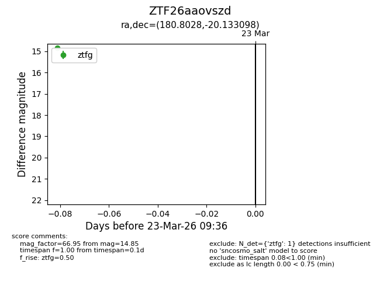
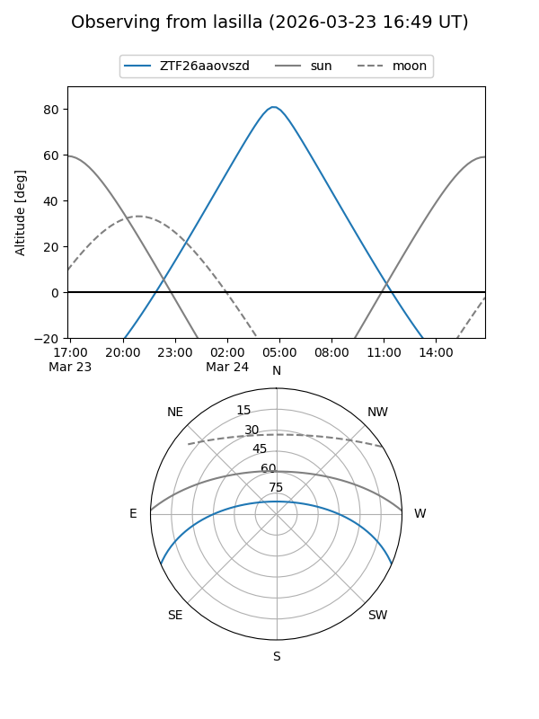
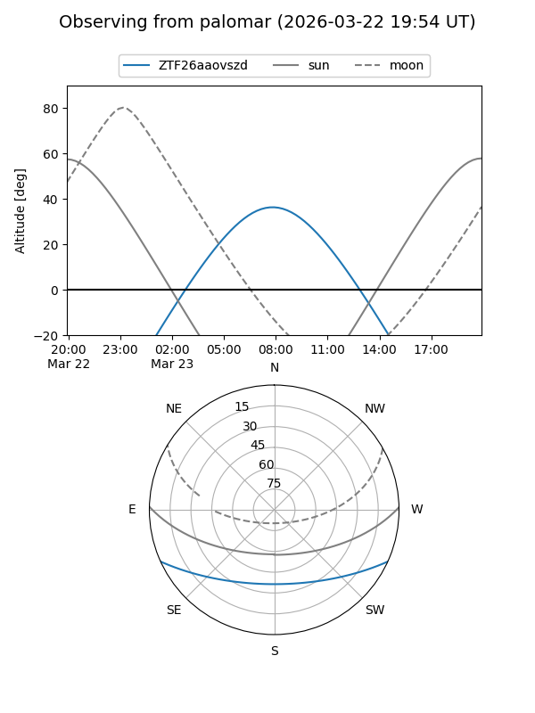

ZTF26aaovszd
Target ZTF26aaovszd at 2026-03-23 09:38
Aliases and brokers:
FINK: link
Lasair: link
ALeRCE: link
alt names
ZTF26aaovszd (ztf,fink_ztf)
Coordinates:
equatorial (ra, dec) = 180.8028,-20.13310
equatorial (HMS+DMS) = 12:03:12.66,-20:07:59.15
galactic (l, b) = (287.7956,+41.31687)
Flags:
Photometry:
last ztfg=14.85
1 ztfg detections
Lightcurve

Visibility


Additional plots